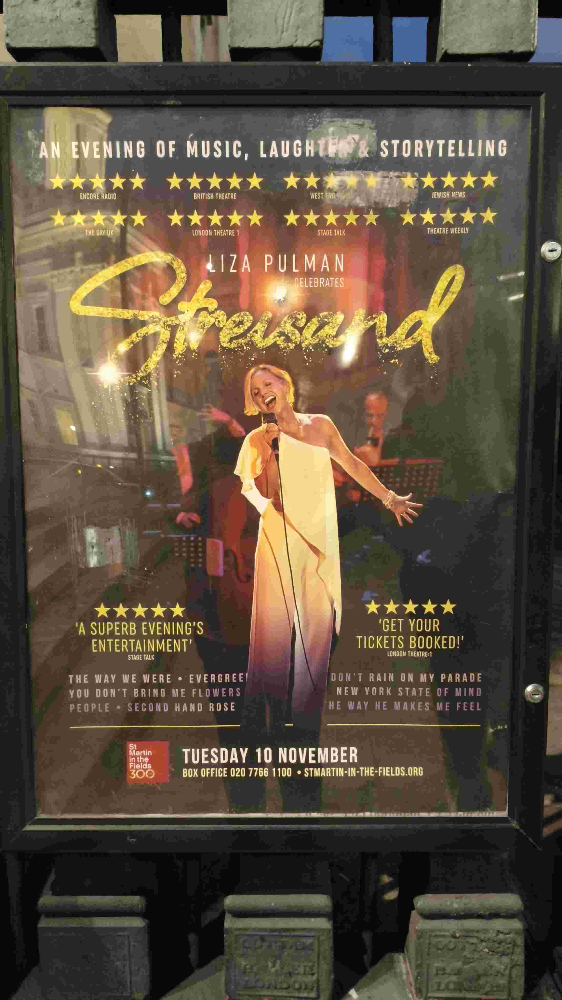

Arribada a Heathrow a les 09:10. Trasllat fins a Ruislip i primer contacte amb la casa. Arribada, trasllat a Ruislip, dinar a prop de l'estació, tarda al centre de Londres i sopar a Covent Garden.
- Metro cap al centre
- Sopar al centre (Covent Garden)
Context de la ciutat — Londres
Londinium
Els romans van fundar Londinium vora el Tàmesi cap al segle I dC. El riu ha marcat sempre el creixement de la ciutat: els ponts, els mercats i el port van néixer de la seva proximitat.
El metro més antic
El 1863 va obrir la primera línia de metro del món, la Metropolitan. Avui el London Underground és la columna vertebral del transport de la ciutat.
Una dada per contrastar
Hi ha molts mites sobre la ciutat, com el de l'origen exacte de cada nom de barri. Quan hi ha dubte, prefereixo no afirmar-ho.
Context del país — Regne Unit
Quatre nacions
El Regne Unit està format per Anglaterra, Escòcia, Gal·les i Irlanda del Nord. Londres és la capital del conjunt i també d'Anglaterra; cada nació té la seva llengua, costums i moneda pròpia, tot i que la lliura esterlina és compartida.
La visita sense passaport
Per a ciutadans de la Unió Europea, la visita de turisme requereix una autorització electrònica de viatge (ETA). Els preus i el procediment canvien; cal comprovar-los a gov.uk abans de pagar.
Saber-ne més · Ruislip Manor
Una estació de dues línies
L'estació té els rètols de la Metropolitan i de la Piccadilly line, com es veu a la foto. La línia Metropolitan hi va arribar el 1904. L'estació es va obrir el 1912 com a Ruislip Manor Halt, i el 1933 els trens de la Piccadilly line van substituir els del District.
Un trajecte amb història
Les fonts no coincideixen en algunes dates: l'estació va tancar el 1917 durant la Primera Guerra Mundial i va reobrir el 1919, segons la majoria. Abans de posar-te en marxa, és millor comprovar l'estat del servei a TfL.